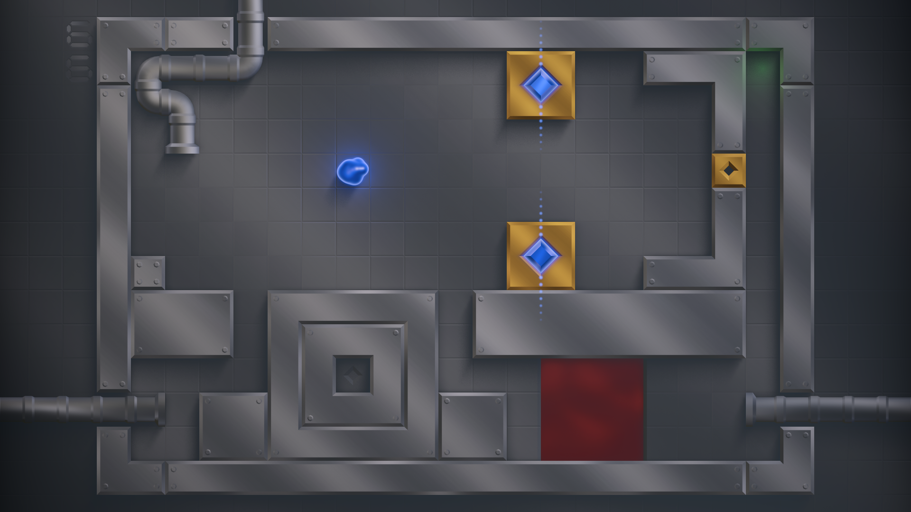
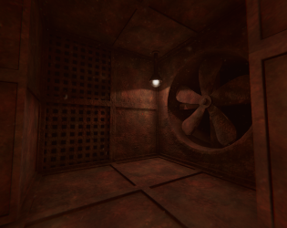
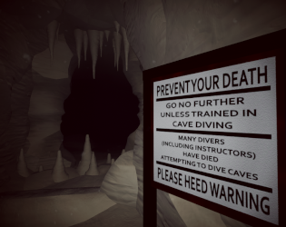
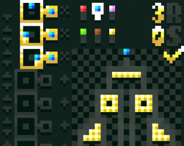
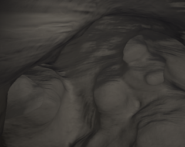

Hi! I'm Quintin, an independent game developer. I love creating and playing video games, especially the puzzly, mysterious, and atmospheric kinds. I also write and produce music now and then.
I'm currently working on SubDuctis, a puzzle game about folding space.
─────── Games ───────
SubDuctis
A chrome coated, Sokoban-style puzzle game about space folding. Bypass obstacles, form conductive paths, and discover new areas. Explore an expanding nonlinear world full of puzzles, suprises, and secrets.
Set to release in Q2 2027. Add it to your Steam wishlist to support development and get updates!
Steam
itch.io
Website

─────── Game Jam Entries ───────
Rust Vault
A dark puzzle platforming adventure featuring a grapple hook.Submission to Scream Jam 2025.
itch.io


HOX
A cellular automata puzzle game. Design rules to grow a seed into the correct shape.Submission to LOWREZJAM 2024.
itch.io

SPLICE CORE
A space folding, sokoban-style puzzle game. The original jam build of SubDuctis.Submission to Acerola Jam 0.
itch.io


─────── Influential Games ───────
Outer Wilds ─ An open-world mystery about a solar system trapped in an endless time loop.
Portal 2 ─ A first-person puzzle game built around a portal-shooting gun and dark humor.
Antichamber ─ A mind-bending psychological exploration game based on non-Euclidean space.
The Witness ─ An open-world puzzle game set on a mysterious, abandoned island.
Animal Well ─ A pixelated metroidvania about spelunking through a strange, secret-filled well.
Inscryption ─ A card-based roguelike wrapped in dark, unsettling psychological horror.
The Talos Principle ─ A philosophical first-person puzzle game about a robot exploring an ancient world.
Tunic ─ An isometric action-adventure about a small fox exploring a land of monsters and secrets.
Opus Magnum ─ An alchemical engineering puzzle game about building intricate machines.
Dark Souls ─ A brutal, atmospheric action RPG through a decaying dark fantasy world.
Undertale ─ A story-rich RPG where you can spare or fight every monster you encounter.
Final Fantasy X ─ A classic JRPG following Tidus's journey across the world of Spira.
VVVVVV ─ A retro-styled platformer built around gravity-flipping instead of jumping.
NaissanceE ─ An atmospheric first-person exploration game through vast, monolithic structures.
SOMA ─ A sci-fi horror game exploring identity and consciousness in an underwater facility.
Thumper ─ A rhythm violence game that's part racing game, part rhythm-action nightmare.
Hollow Knight ─ A challenging 2D metroidvania set in the ruined insect kingdom of Hallownest.
Silent Hill 2 ─ A psychological horror classic about a man searching a fog-drenched town for his dead wife.